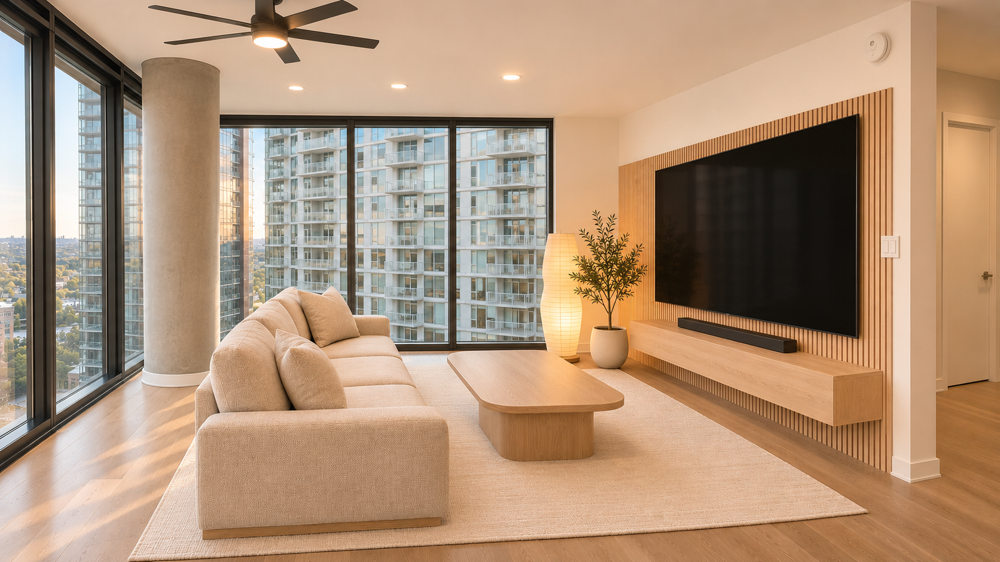
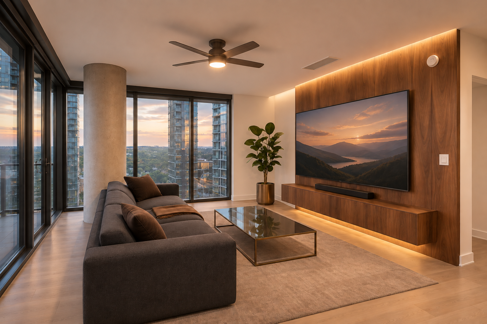
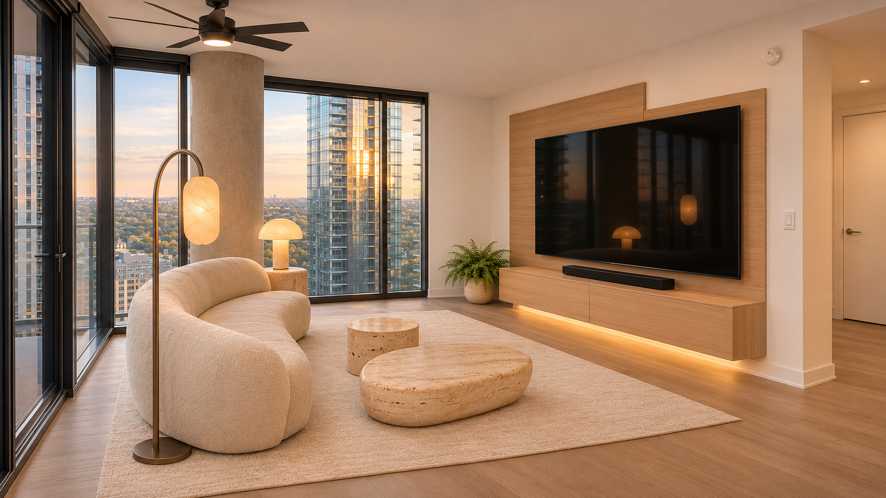
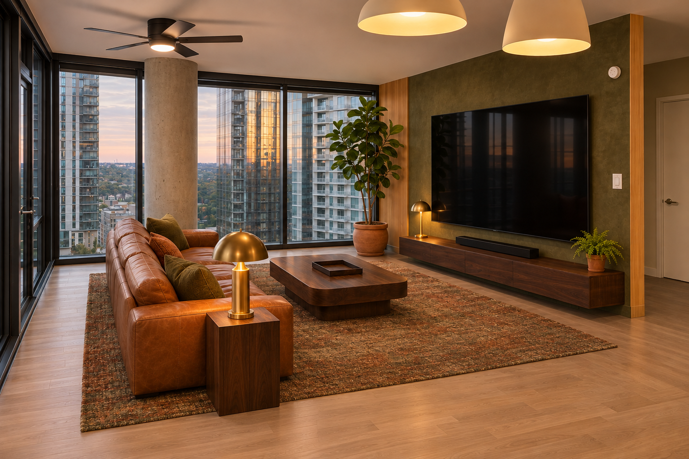

1 · Pale oak Japandi
Pale oak, oatmeal upholstery, soft paper lighting.
Geometry limitations
Switch spacing is compressed; glazing divisions are simplified. Island and west door are outside the crop. Exact rendered dimensions are unverified.
Dimension schedule and full prompts
2 · Walnut cinema
Flat walnut panels, charcoal sofa, smoked glass and bronze.
Geometry limitations
Rear solid-wall width, wood-panel extent and alarm offset drift from the schedule. Exact rendered dimensions are unverified.
Dimension schedule and full prompts
3 · Sculptural cream & travertine
Rounded cream upholstery, mineral textures, broad oak panels.
Geometry limitations
Floor lamp is too far west; small coffee table is on the opposite side from its scheduled position. Exact rendered dimensions are unverified.
Dimension schedule and full prompts
4 · Olive & cognac
Olive plaster, honey oak, cognac leather and brass.
Geometry limitations
Extra oak trim appears at the office recess; recess depth and side-table spacing remain approximate. Exact rendered dimensions are unverified.
Dimension schedule and full prompts